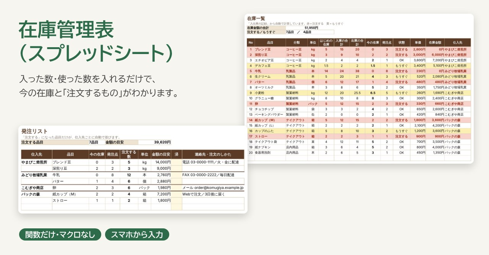
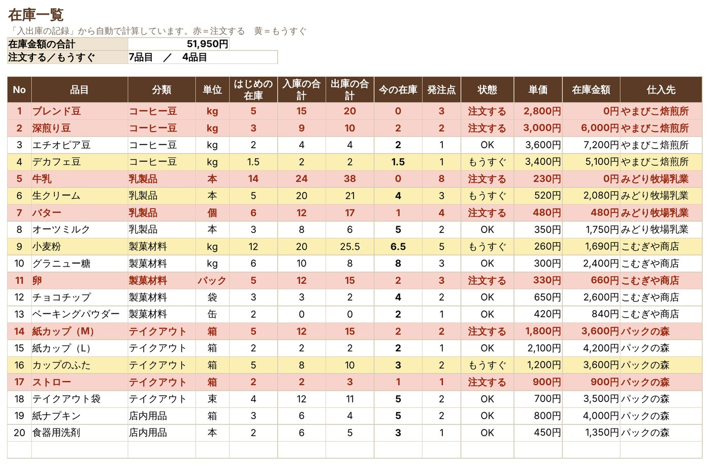
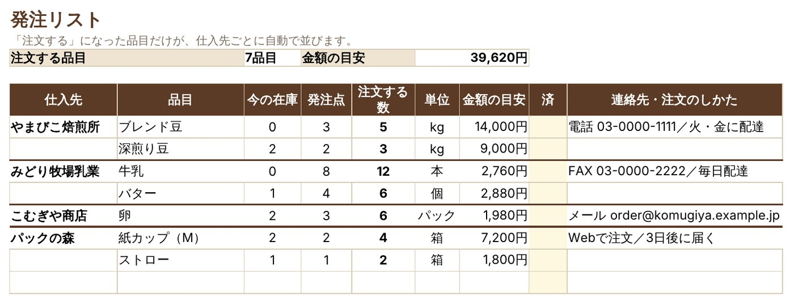
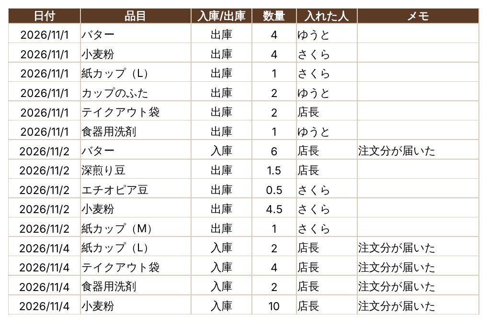
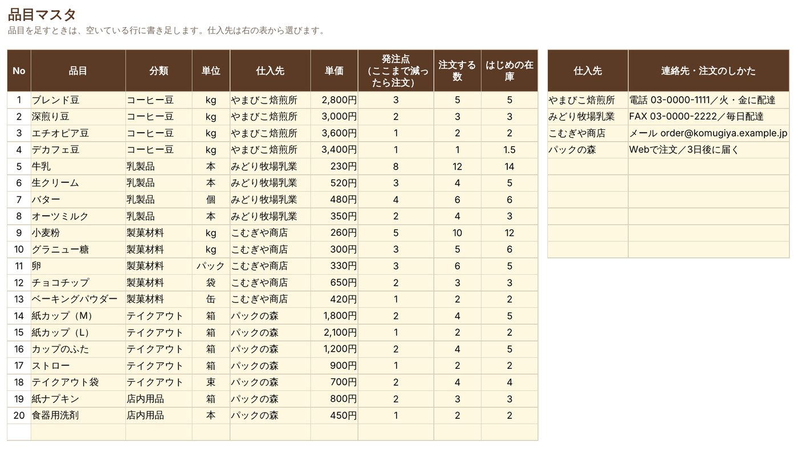
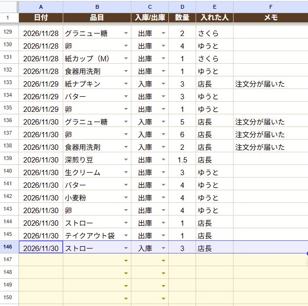
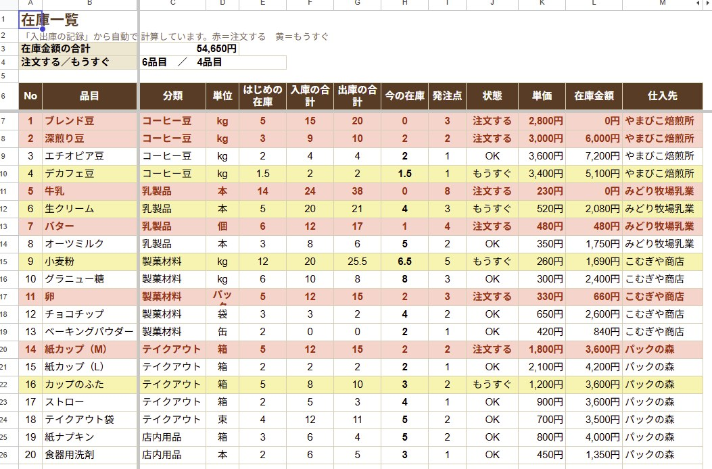
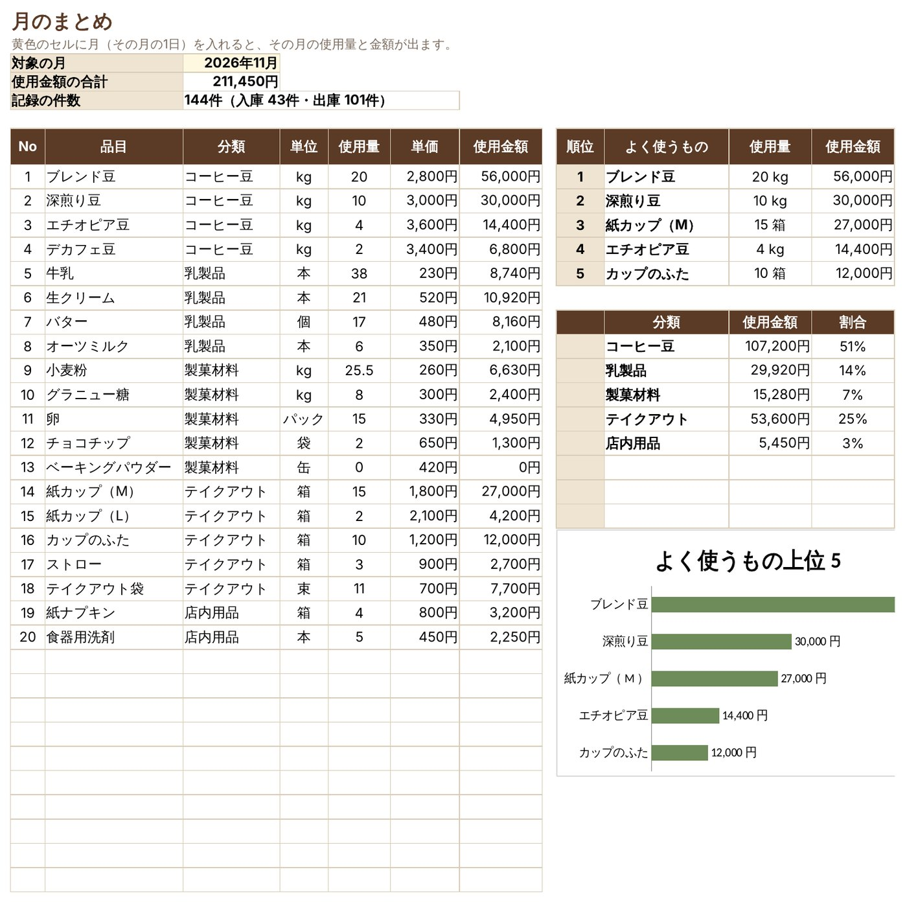

← 制作実績一覧へ戻る
見本ファイルつき
在庫管理表（スプレッドシート・関数だけ）
紙とメモで管理していて、気づいたら材料が切れている。そんなお店のために、入った数・使った数を1行ずつ入れるだけで、今の在庫と「注文するもの」が自動でわかる表を作りました。マクロは使わず関数だけなので、Googleスプレッドシートでもスマホから入力できます。

想定した依頼
「お店の材料や商品の在庫を、紙とメモで管理していて、気づいたら切れている。入った数・使った数を入れるだけで、今の在庫と『そろそろ注文するもの』がわかる表を、Googleスプレッドシートで作ってほしい。スマホからも入れたい」。小さなお店や教室からのご相談を想定して作りました。
作ったもの
架空のお店「カフェ ひだまり」の、コーヒー豆・牛乳・小麦粉・紙カップなど20品目の在庫管理表です。入力するのは「入出庫の記録」シートだけで、ほかのシートは自動で計算されます。
- 入出庫の記録：日付・品目・入庫/出庫・数量・入れた人を1行ずつ書き足す
- 在庫一覧：品目ごとの今の在庫と在庫金額。発注点まで減ると赤、近づくと黄色
- 発注リスト：注文が必要な品目だけが、仕入先ごとに連絡先つきで並ぶ
- 月のまとめ：月ごとの使用量・使用金額、よく使うもの上位5、分類ごとの割合
- 品目マスタ・使い方：品目や仕入先の登録と、使い方の説明


入力の画面
入力は1行ずつ書き足すだけです。品目と入庫/出庫はリストから選ぶので、スマホでもタップで入れられます。


Googleスプレッドシートで試したところ
見本のファイルをGoogleスプレッドシートで開き、「ストローが3箱届いた」という入庫を1行足してみました。品目と入庫/出庫はリストから選べます。


月のまとめ

工夫した点
- 入力はひとつのシートだけ：記録を1行足すと、在庫・発注リスト・月のまとめがすべて変わります。計算のシートはさわらなくて大丈夫です。
- 入力ミスを防ぐ：品目と入庫/出庫はリストから選ぶ、数量は0より大きい数だけ、日付は日付だけが入るようにしました。
- 色と並びで、次にやることがわかる：発注点まで減った品目は赤くなり、発注リストに仕入先ごとにまとまって出ます。
- 関数だけで、どこでも動く：マクロを使わないので、Googleスプレッドシート・Excelのどちらでも同じように動きます。品目を足しても式はこわれません。
- 計算が正しいかを確かめた：見本の記録144件から、別に数えた在庫・使用量の答えを用意し、表の計算とすべて一致することを確かめました。
規模と制作時間
- シート6枚（使い方・入出庫の記録・在庫一覧・発注リスト・月のまとめ・品目マスタ）、グラフ1つ
- 制作：表の作成と、計算が正しいかの確認まで 約30分（AIと一緒に作成）
こんなご依頼にも対応できます
- 紙やメモの在庫・備品・貸し出しの管理を、スプレッドシートにしたい
- 今使っているExcelの表に、自動の計算や色分けを足したい
- スマホから入力できる、かんたんな記録表がほしい
注意
お店の名前・品目・数量・仕入先・連絡先はすべて架空の見本です。